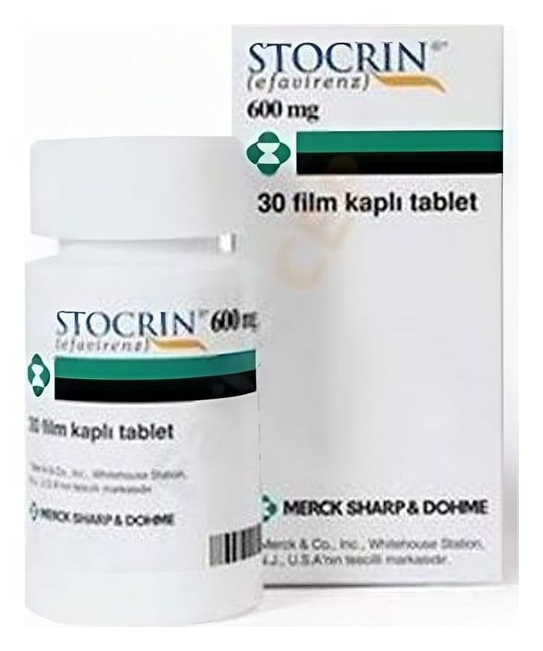

Stocrin 600 mg Film Tablet, 30 Adet

Ne için kullanılır
KT · Bölüm 1STOCRIN 600 mg film kaplı tablet, bir tarafında “225” yazısı bulunan, kapsül şeklinde, koyu sarı renkte tabletlerdir.
Efavirenz isimli etkin maddeyi içeren STOCRIN nükleozid olmayan ters transkriptaz inhibitörleri (NNRTİ’ler) adı verilen antiretroviral (virüs tedavisinde kullanılan ilaç grubu) ilaç sınıfına üyedir. STOCRIN, kandaki virüs miktarını düşürerek insan immün yetmezlik virüsü (HIV) enfeksiyonu ile savaşan bir antiretroviral (virüs tedavisinde kullanılan ilaç grubu) ilaçtır.
Doktorunuz size STOCRIN’i HIV enfeksiyonunuz olduğu için reçete etmiştir. Bu ilaç bağışıklık sisteminizi güçlendirecek ve HIV enfeksiyonuna bağlı hastalıkların gelişme riskini azaltacaktır. STOCRIN'in diğer antiretroviral (virüs tedavisinde kullanılan ilaç grubu) ilaçlarla birlikte alınması kanınızdaki virüs miktarını azaltır.
Bu ilacı kullanmaya başlamadan önce bu KULLANMA TALİMATINI dikkatlice okuyunuz, çünkü sizin için önemli bilgiler içermektedir.
• Bu kullanma talimatını saklayınız. Daha sonra tekrar okumaya ihtiyaç duyabilirsiniz. • Eğer ilave sorularınız olursa, lütfen doktorunuza veya eczacınıza danışınız. • Bu ilaç kişisel olarak sizin için reçete edilmiştir, başkalarına vermeyiniz. • Bu ilacın kullanımı sırasında, doktora veya hastaneye gittiğinizde doktorunuza bu ilacı kullandığınızı söyleyiniz. • Bu talimatta yazılanlara aynen uyunuz. İlaç hakkında size önerilen dozun dışında yüksek veya düşük doz kullanmayınız.